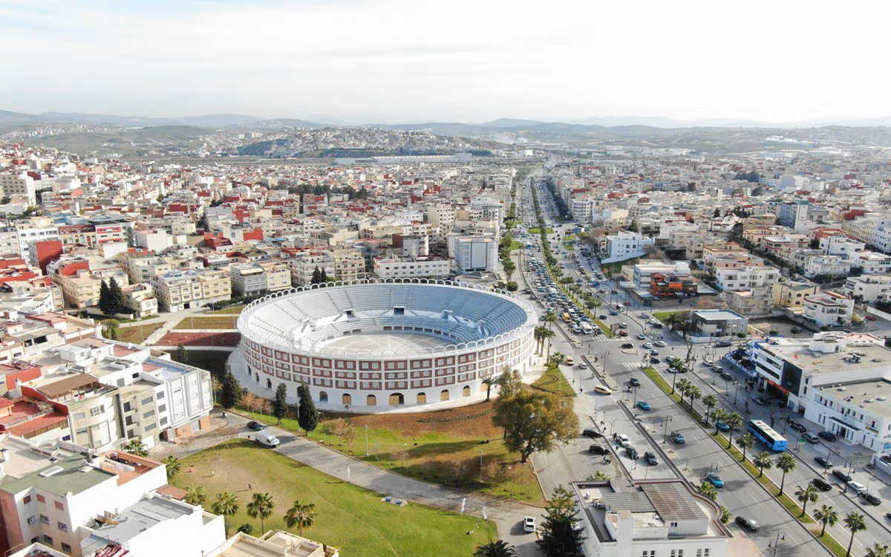
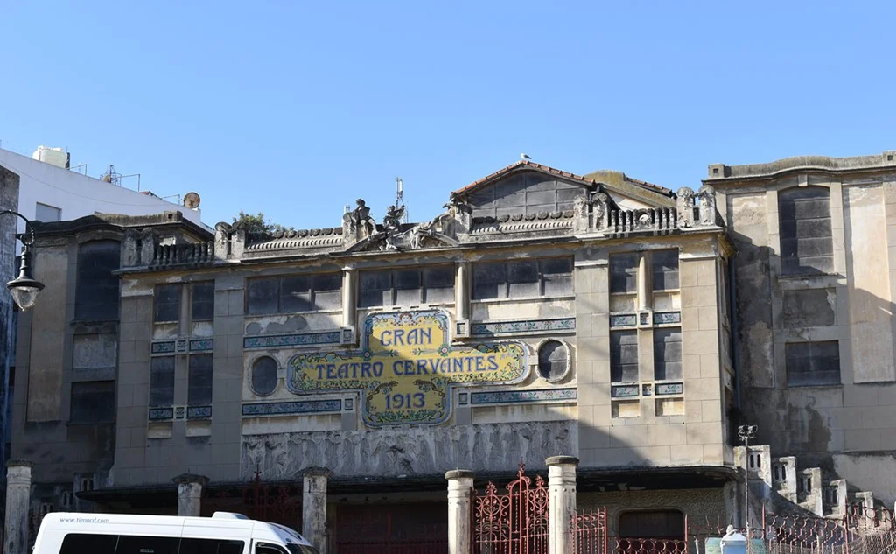
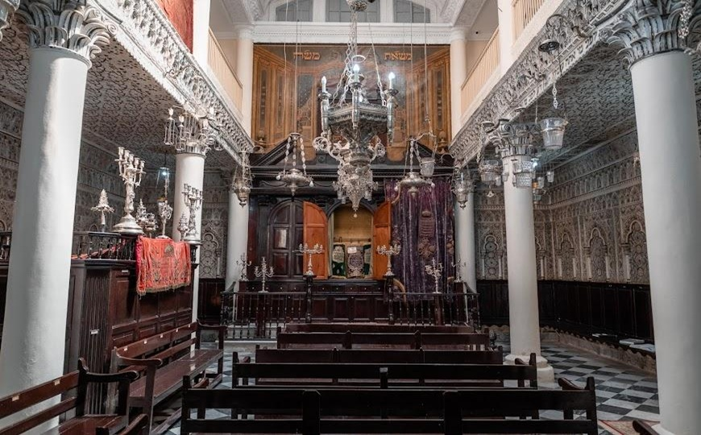
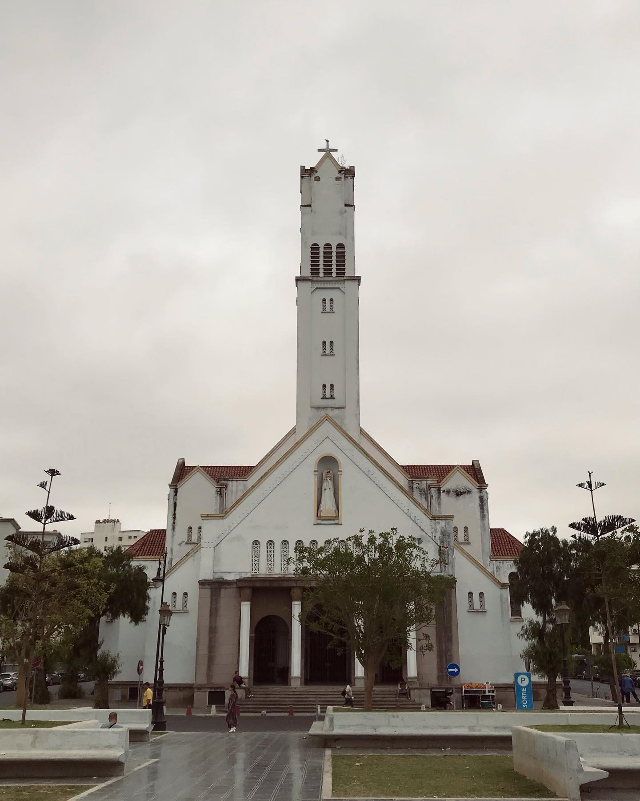
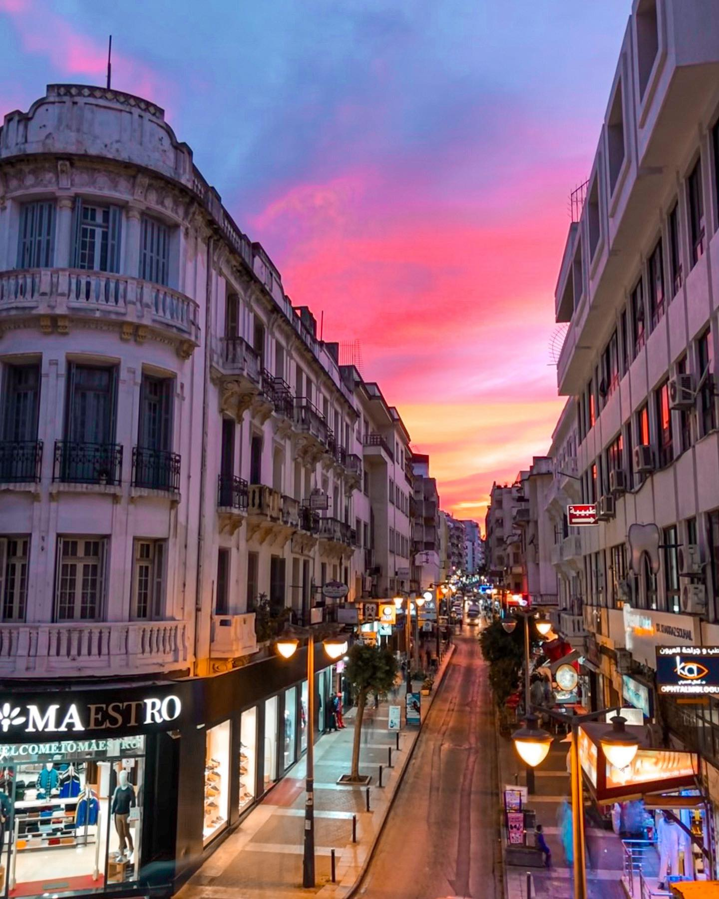
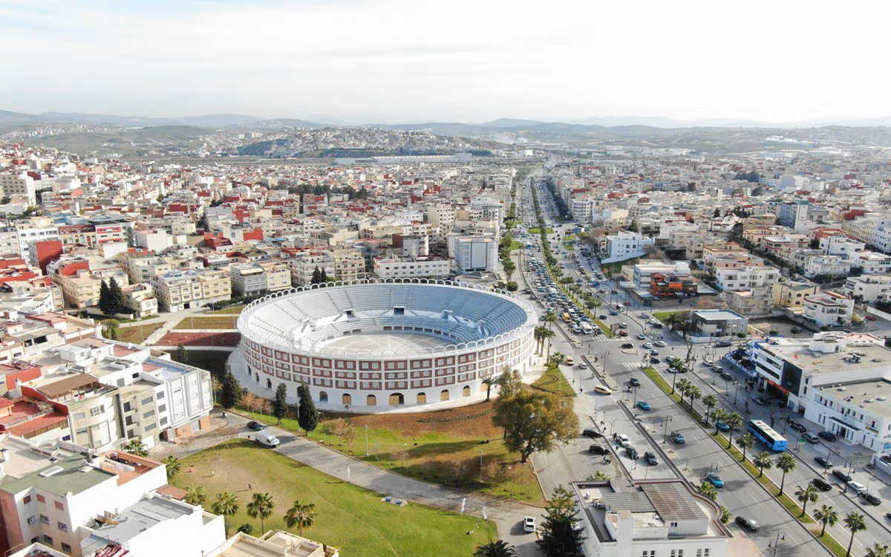
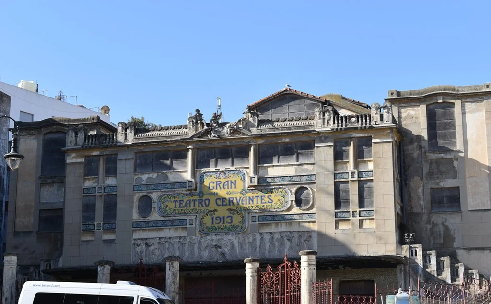
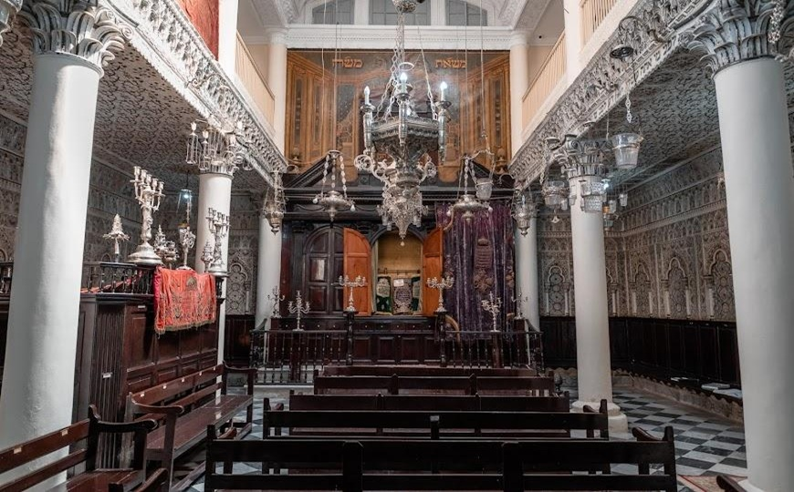
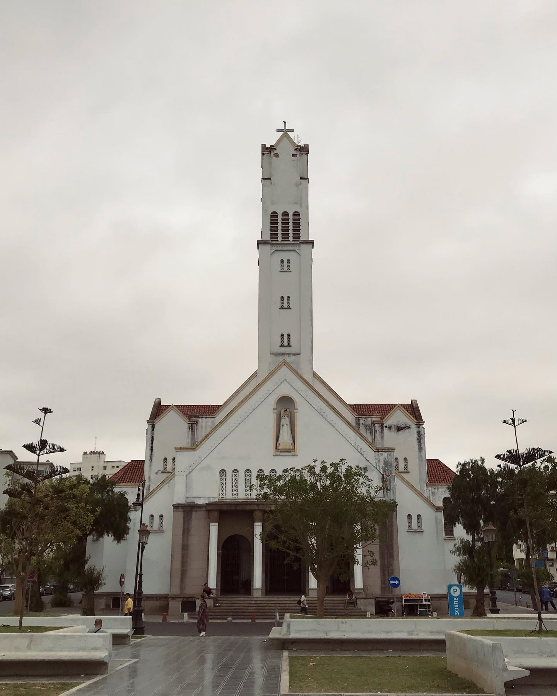
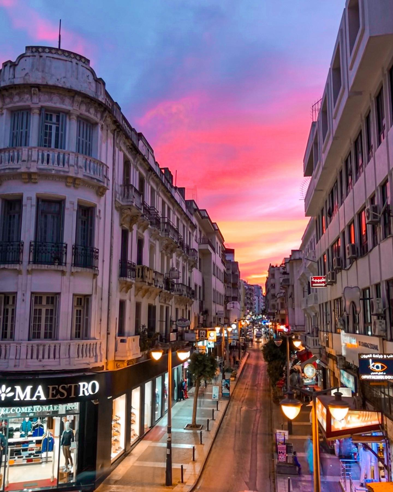

Introducción
Tánger, una ciudad muy especial del norte de Marruecos. está situada entre el océano Atlántico y el mar Mediterráneo, lo que le da una posición muy importante y una mezcla cultural única.

Tánger, una ciudad muy especial del norte de Marruecos. está situada entre el océano Atlántico y el mar Mediterráneo, lo que le da una posición muy importante y una mezcla cultural única.
Tánger es una ciudad muy antigua, con más de 3.000 años de historia. Fue ocupada por fenicios, romanos, árabes, portugueses, españoles y franceses, lo que le da una cultura rica y diversa.
La Medina es la parte más famosa, con calles estrechas, casas blancas y muchos comercios tradicionales. También destacan el Cabo Espartel y la Cueva de Hércules.


 









Tánger se ha convertido en un centro importante para la industria y la economía.
La fábrica Renault de Tánger es una de las más grandes de África. En 2024 produjo alrededor de 400.000 coches, principalmente Dacia Sandero y Renault Express.

Empresas como Safran, Eaton, TDM Aerospace producen piezas para aviones en Tánger.


Tánger ha visto nacer o vivir a muchas personas importantes:


También vivieron artistas internacionales como Paul Bowles, Jean Genet y William Burroughs.
En resumen, Tánger es una ciudad histórica, multicultural y moderna. Tiene una mezcla única de culturas, una historia rica, una gran actividad industrial y empresas importantes. Todo esto hace de Tánger una ciudad dinámica y con mucho futuro.